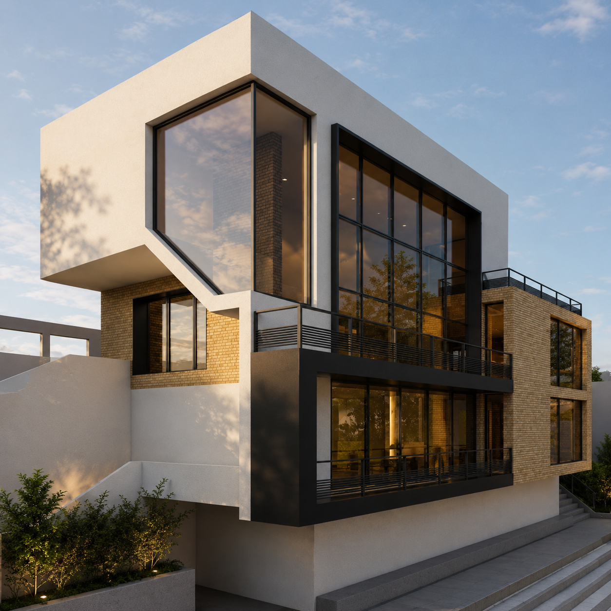
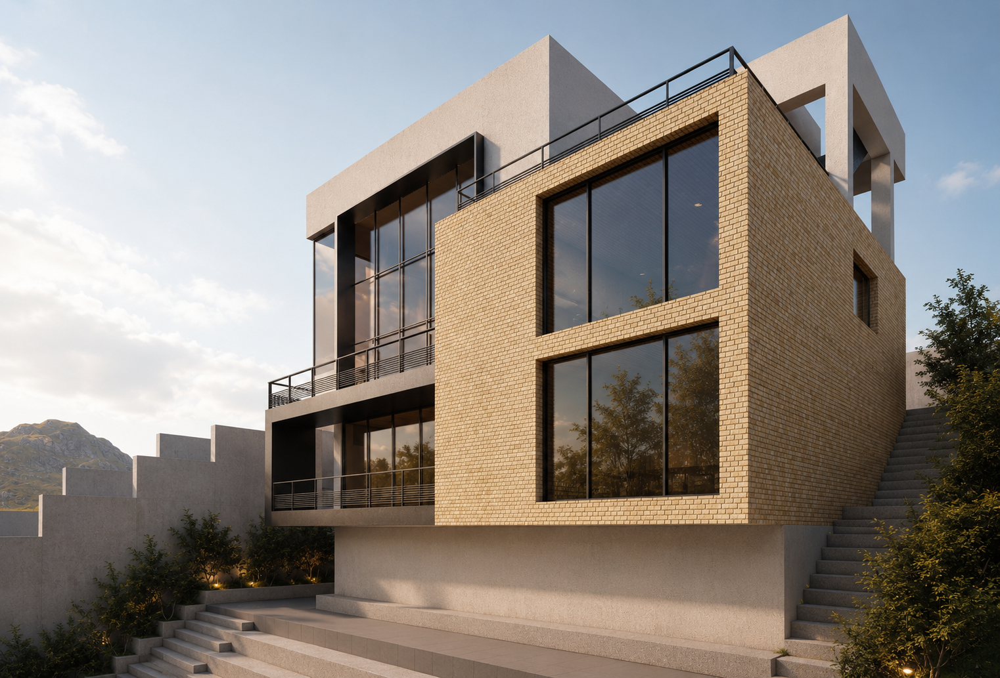
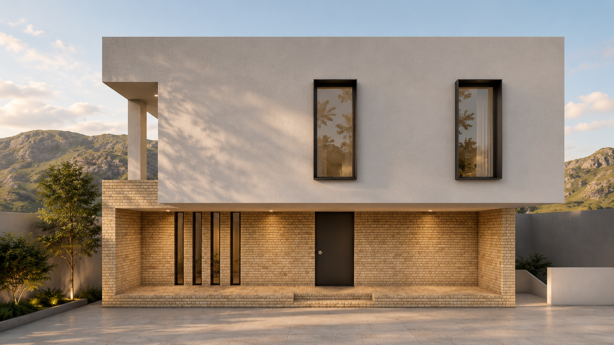
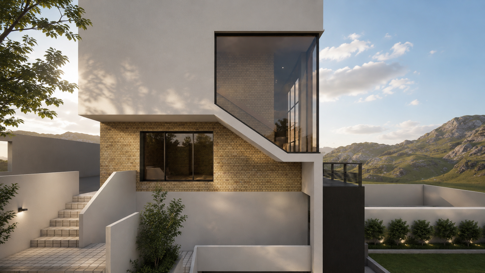
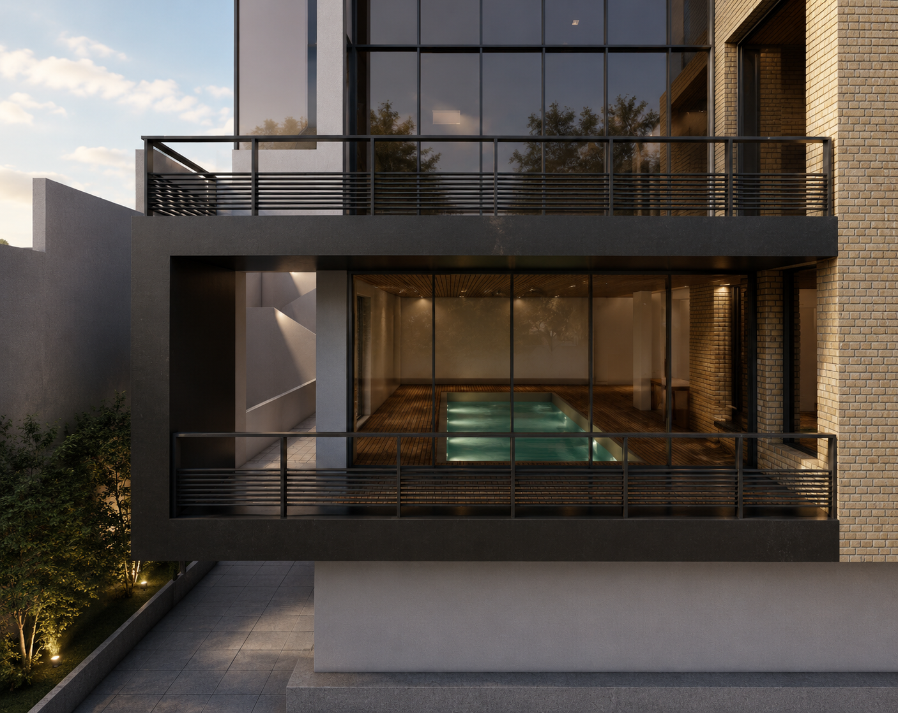
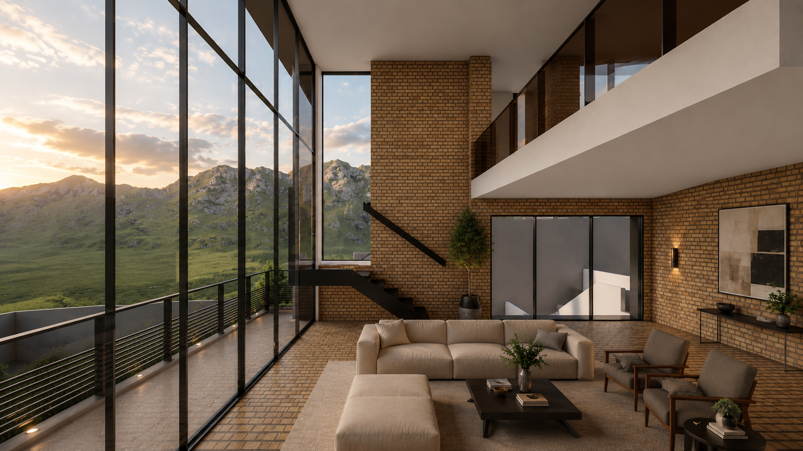

Residential Architecture

Location
Year
Scope
Collaboration
Commissioned by
Sora House takes its name from the Japanese word sora, meaning sky. Conceived around the idea of framing the sky as an architectural element, the design transforms changing light, clouds, and seasonal atmospheres into an integral part of everyday living. A dramatic double-height living space, enclosed by expansive floor-to-ceiling glazing, creates a visual connection between the interior and the landscape while allowing the sky to become the home's defining backdrop. The architecture is expressed through the composition of clean geometric volumes, where solid white forms contrast with warm light brick and slender black steel detailing. This restrained material palette emphasizes clarity, proportion, and the interplay of light and shadow throughout the day. Carefully positioned openings maximize natural daylight while maintaining privacy, creating interiors that feel open, calm, and deeply connected to their surroundings. At the heart of the house, the living area serves as a central gathering space where architecture and nature coexist in quiet balance. The floating staircase, generous ceiling height, and uninterrupted views reinforce a sense of openness and continuity between levels. Sora House is a celebration of simplicity, light, and timeless materials, where the sky is not merely viewed from within the home, but carefully framed as an ever-changing part of the architecture itself.





